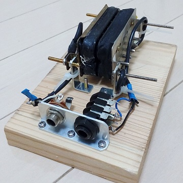
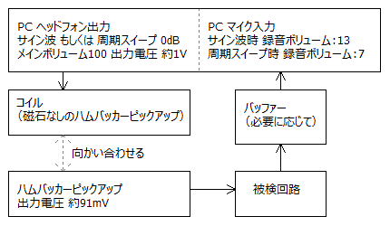
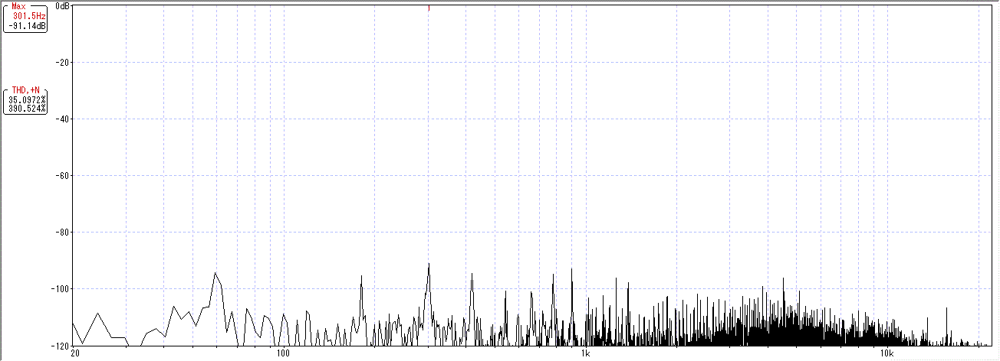
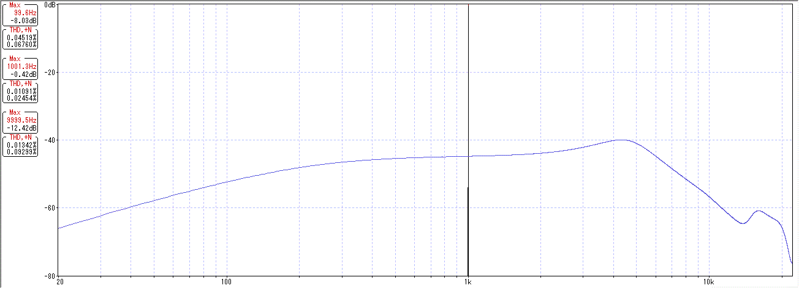

○○で音は変わるのか 測定準備
2016年10月29日 カテゴリー：○○で音は変わるのか
デジマート地下実験室のページにはいろいろと面白い記事が載っています。ただこのサイト内の周波数特性測定ではあまり特徴がわからないので、よりわかりやすいデータをとってみようと思います。
まずは再現性のあるギター出力が必要です。下記ページを参考に私もピックアップを向かい合わせたものを作りました。
Repair Garage Studio→「ギター シールド ケーブルの特性測定レポート」のページ
片方のピックアップに信号を入力すると、もう片方のピックアップの磁界が変化し、出力が得られます。この出力はギター弦の振動で磁界が変化した場合と同等のものと考えてよいと思います。今後これを「擬似ギター出力」として使っていきます。

信号入力用コイルは磁石なしのエピフォンのハムバッカー（HOTCH(G) LP:BRIDGEと記載）、出力ピックアップはSeymour Duncan SH-4 JB Modelです。
下図のように接続し測定します。PCとバッファーの特性は測定環境のページに記載しています。

「被検回路」の部分に比較する回路をつなぎます。今回はMOGAMI 2524の10cmケーブルでつないでいます。
まずはノイズ測定です。録音ボリューム7で、-90dB程度となりました。ピックアップを金属ケースに入れればもっと減ると思いますが、ギターに載っている状態と同じにするということでそのままにしておきます。

※縦軸が120dBとなっています。
各歪率と周波数特性は下図です。

歪率は0.05%ぐらいが限界のようです。周波数特性はホワイトノイズでもよいのですが、よりキレイに見える周波数スイープを使っています。思ったより低域・高域が落ちていました。